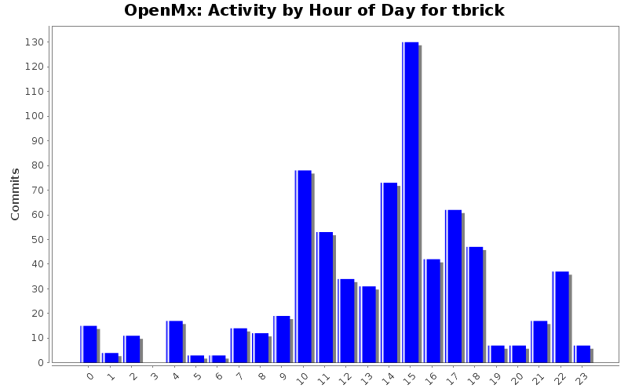
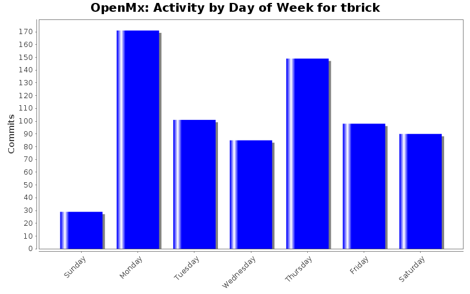
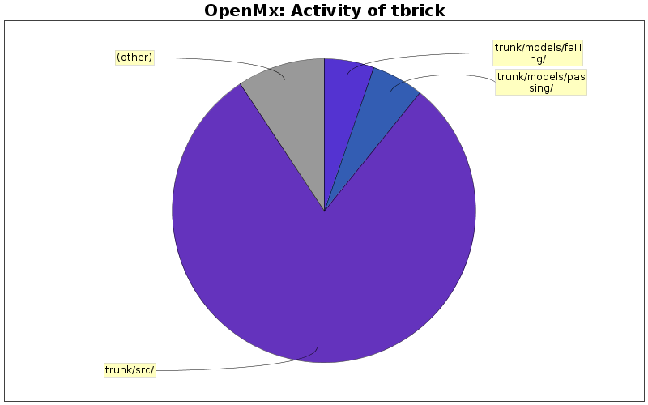

| Directory | Changes | Lines of Code | Lines per Change |
|---|---|---|---|
| Totals | 723 (100.0%) | 22801 (100.0%) | 31.5 |
| trunk/src/ | 480 (66.4%) | 18211 (79.9%) | 37.9 |
| trunk/models/passing/ | 28 (3.9%) | 1256 (5.5%) | 44.8 |
| trunk/models/failing/ | 46 (6.4%) | 1222 (5.4%) | 26.5 |
| trunk/R/ | 83 (11.5%) | 1118 (4.9%) | 13.4 |
| trunk/models/failing/mx-scripts/ | 9 (1.2%) | 487 (2.1%) | 54.1 |
| trunk/demo/ | 18 (2.5%) | 214 (0.9%) | 11.8 |
| trunk/man/ | 5 (0.7%) | 183 (0.8%) | 36.6 |
| trunk/models/passing/mx-scripts/ | 1 (0.1%) | 44 (0.2%) | 44.0 |
| trunk/ | 23 (3.2%) | 43 (0.2%) | 1.8 |
| trunk/inst/tools/ | 3 (0.4%) | 19 (0.1%) | 6.3 |
| trunk/models/nightly/ | 2 (0.3%) | 2 (0.0%) | 1.0 |
| trunk/inst/testsuite/ | 1 (0.1%) | 2 (0.0%) | 2.0 |
| trunk/swift/demo/scripts/ | 1 (0.1%) | 0 (0.0%) | 0.0 |
| trunk/swift/demo/results/ | 1 (0.1%) | 0 (0.0%) | 0.0 |
| trunk/swift/demo/ | 7 (1.0%) | 0 (0.0%) | 0.0 |
| trunk/swift/ | 7 (1.0%) | 0 (0.0%) | 0.0 |
| trunk/support/ | 2 (0.3%) | 0 (0.0%) | 0.0 |
| trunk/inst/npsol/osx/ | 1 (0.1%) | 0 (0.0%) | 0.0 |
| trunk/inst/npsol/linux/ | 5 (0.7%) | 0 (0.0%) | 0.0 |

Minor change to allow weights to be specified for undocumented, mostly-untested WLS objective. No error checking for weights in WLS objective yet.
57 lines of code changed in 2 files:
Adjusted some comments to be more informative and corrected a memory leak in one algebra function.
10 lines of code changed in 1 file:
Updated NA/Inf Objective Error message.
14 lines of code changed in 1 file:
Added destructors to clean up a memory leak in RAM/ML Gradient calculations.
16 lines of code changed in 1 file:
Rolling back an accidental change to DESCRIPTION. Whoops.
1 lines of code changed in 1 file:
Test for ULS using WLS objective.
154 lines of code changed in 1 file:
Added a limited first take on a WLS Objective.
641 lines of code changed in 6 files:
Corrects an error in RAM derivative computation and adds OMX_DEBUG_DEVELOPER flag to turn on additional conformance checking.
62 lines of code changed in 7 files:
Several major changes. Split omxMLObjective.h off into its own file. Changed the signature for gradient computation functions. Updated the RAM gradient calculation to take advantage of the sparse-derivatives speedup. Slight speedup to RAM fast inverse computations. Cleaning of deriv. functions still required.
658 lines of code changed in 12 files:
Changed the format of an author's name in the citation at his request.
2 lines of code changed in 1 file:
Fixed an issue in a case of Joint FIML computations.
1 lines of code changed in 1 file:
Fixed the in-place transpose operator to actually swap the dimensions of the matrix.
7 lines of code changed in 1 file:
Speedups and redundancy reduction for RAM/ML gradient calculations.
68 lines of code changed in 5 files:
Added analytic gradient calculation for RAM/ML models. Minor changes to BLAS functions we weren't using.
395 lines of code changed in 9 files:
Fixed a bug in joint ordinal/continuous FIML where rows had all ordinal or all continuous manifests missing. Added duplicate-row speedup to joint FIML. Fixed a rare issue in ordinal FIML where some NAs were not being recognized.
666 lines of code changed in 7 files:
Fixed a bug in the recomputation system and enabled parallel execution on ordinal FIML.
1 lines of code changed in 2 files:
Removed SetFinalReturnsRAMObjective, because it is no longer called.
1 lines of code changed in 1 file:
Fixed a bug in the calculation of Independence likelihoods. And sped up the computation, to boot.
10 lines of code changed in 1 file:
Added several omx-version BLAS functions to better encapsulate omxMatrix class. Also altered the API for objective function duplication to fix an error in parallel hessian calculation.
167 lines of code changed in 8 files:
Added omxState duplication process.
110 lines of code changed in 3 files:
(145 more)